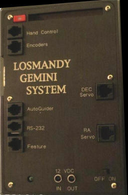
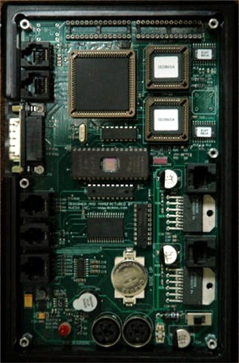
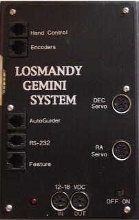
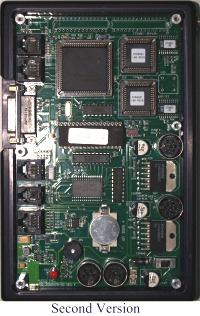
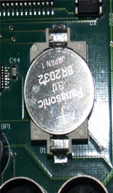
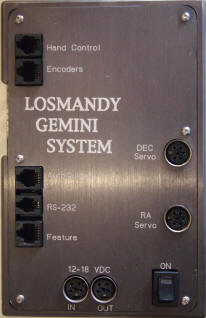
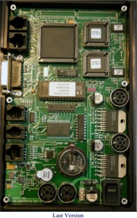
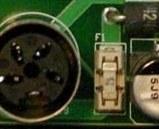

Fig 1A

Fig 1B

Fig 1C
| GEMINI ONE PCB Pictures |
| CLICK ON PICTURES TO SEE LARGER VERSIONS |
|
 Fig 1A |
Fig 1B |
Fig 1C |
|
This is the first version. Notice that the displays are on the board, along with the Menu button. Please see
FAQ #8 about the difference in the autoguider input from later models. The motor cables are flat telephone style cable. This model used a 4 button controller shown to the right. Note that this same controller can be used with the Gemini-2 also. It is called the Standard or Classic Hand controller and has a part number of HC at Losmandy's Replacement parts page |
| There is a modification to extend the battery life and prevent CMOS resets. See here. |
|

Fig 2A |
 Fig 2B |
| This is the almost the same board shown above, except that the displays and menu button was removed, and the power connectors changed to DIN plugs. This is when the Deluxe Hand with came out. A picture of the Deluxe hand controller that is supplied with this version to the right. This Deluxe hand controller was also supplied with all of the next versions shown below. This board still uses the same autoguider input and motor cable style as the above model. |
| There is a modification to extend the battery life and prevent CMOS resets. See here |
|
 Fig 3A |
 Fig 3B |
| This is the second version of the board. The motor and power connectors were changed to round din style plugs. The power switch is a slide switch with a separate power LED. A inverter IC was added to the Guider circuit to provide compatibility with the ST4 standard. See FAQ #8 about this. This version came with the Deluxe Hand controller shown above. |
|
 Fig 4 Click on picture to see larger version. Video of changing this type of battery. |
| Here is a close up of the CR2023 battery holder. Notice the battery clips at the top of the battery are over the top edge, contacting the positive side. Click on the picture to see a larger close up. They are very easy to make go below the battery, and if that happens, the Gemini-1 will not remember it's setting. So careful insertion of the battery is necessary. The newest Gemin-1 unit uses a CR2354 battery which uses a totally different type of battery holder. You can see that by expanding the picture below/right. |
|
 Fig 5A |
 Fig 5B |
| This is the last version of the Gemini-1 controller. The power switch has been changed to a Illuminated Rocker type switch and the battery changed to a CR2354. Changing the CR2354 battery Video. This version came with the Deluxe Hand controller show above. The other change was to ground the board to the case, instead of letting the ground float as in previous versions. Otherwise the schematics are almost identical, except for battery and switch types and the power indicator being including within the rocker switch. |
| The fuse F1 for all models of the Gemini-1 is just to the right of the Right Power connector. It is a LittleFuse 452-454 normally called a Nano with a 5 Amp rating. |
|
 Fig 6 |
See
Omni-Block Fuse and Fuse Holders and Littlefuse order page. |
|